aCLR and tcaCLR turn a CLR score matrix into a walk on a gene network. Two settings control the walk.
We want to set keff and t from each dataset's own data, without using any truth. The spirit is the same as BIC (a likelihood score with a penalty for the number of parameters) or empirical Bayes (estimating a prior from the data themselves): let the data say how complex a description they support. No truth set is left unused in this project, so any claim about a changed setting needs a new truth later.
| Tool | What it estimates | Input | Penalty or regulariser | Cost (estimates, not measured) | Status |
|---|---|---|---|---|---|
| Spectral-edge depth (PA on the operator) | depth t for a given keff | operator rebuilt on 10 to 20 permuted datasets | edge of the permuted band; ε is a free choice | 10 to 30 min per dense eigendecomposition (review), times 10 to 20; minutes if truncated | untested |
| Plain PA, Marchenko-Pastur, Minka | data dimension k | gene correlation matrix | permuted band, analytic edge, or Laplace evidence | seconds to minutes (mine) | untested |
| Graph-signal likelihood | keff and t as a ridge; a noise floor | graph from one half, experiments from the other, blocked by laboratory | held-out scoring only; 1-SE rule; BIC as a second reading | 1 to 2 h dense, minutes truncated (review) | untested |
| Instability curve (StARS-style) | keff | subsampled experiments | smallest keff with instability at most 0.05 | hours (review) | untested |
| Islands and conductance | a depth window; a multi-scale warning; a check on keff | sparsified graph; walks from all genes | rewired-graph null | minutes (review) | untested |
| Diffusion-PMI second CLR | replaces the reachable-only row z | Pt and its stationary distribution | degree-corrected null | same as the walk | untested |
| Planted simulation and permuted controls | whether any rule above works | simulated data | pre-written decision rule | 1 to 2 h (review) | not yet run |
Yes for depth, no for breadth. A parallel analysis (PA) gives the data's dimension k, the number of modes that beat chance. Applied to the walk operator instead of the correlation matrix, it also gives a depth t. It does not by itself give keff, because the permuted-data null itself depends on keff. Section 2 explains why and what else to add.
(1) Start from the symmetric CLR score matrix S (the two directions combined as a Stouffer sum, (Z + ZT)/√2, negatives set to 0). (2) For each gene, keep its top cap positive partners and take a softmax over their scores (weights proportional to exp(score / temperature)). The softmax temperature is chosen so that exp(entropy) = keff. The row is that gene's attention. (3) Normalise the rows. A gene with no candidate gets a self-loop. Call the result A. It is directed. (4) The lazy walk is P = 0.5 I + 0.5 A, and Pt is found by repeated multiplication. (5) The tcaCLR readout takes log Pt (zero entries count as unreachable), standardises each row over its reachable off-diagonal entries, sets negatives to 0, and combines the two directions as (Z + ZT)/√2. This is sk_a3r in analysis/explore_stack/stack_lib.R. The pictures below use an undirected, symmetrised version of A, because eigenvalues are simplest there. Section 6 comes back to this point.
A pattern of values over the genes. Take any list of numbers, one per gene. For example, the expression of all genes in one experiment. We call this a signal on the network.
Modes. Any signal can be split into a sum of building blocks called modes. The modes are the eigenvectors of the network's walk matrix. Each mode comes with a number, its eigenvalue, between 0 and 1 for our lazy walk. The next figure shows three modes of a toy network of 60 genes in 3 modules.
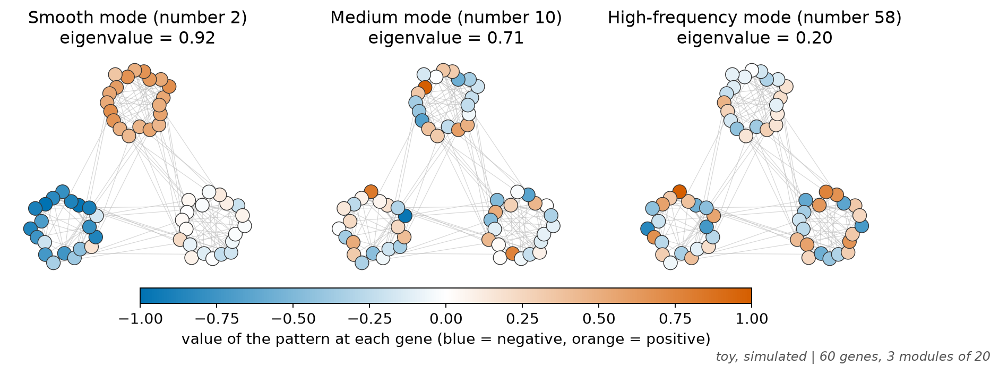
One step of the walk multiplies each mode by its eigenvalue. After t steps each mode is multiplied by (eigenvalue)t. We call this the gain.
gain of mode k after t steps = (λk)t
In words: a mode with eigenvalue 0.95 keeps 77% of its size after 5 steps. A mode with eigenvalue 0.5 keeps 3%. Smooth modes survive. The rest fade. That is a low-pass filter: it lets the low frequencies pass and blocks the high ones.
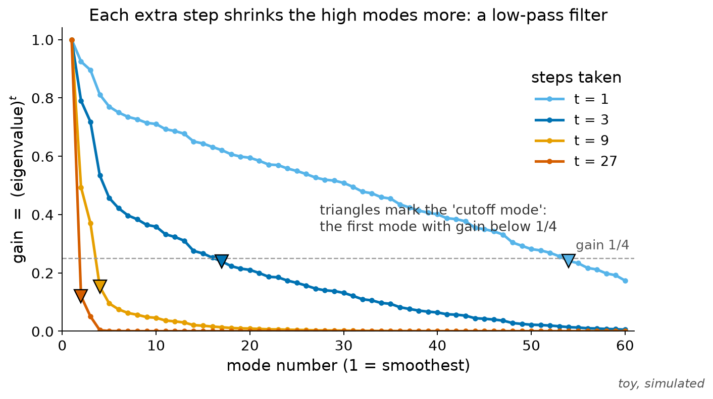
The same thing seen on the network. The filter picture is the same as the "attention spreads" picture. Start the walk at one gene and look at where its probability mass sits after t steps.
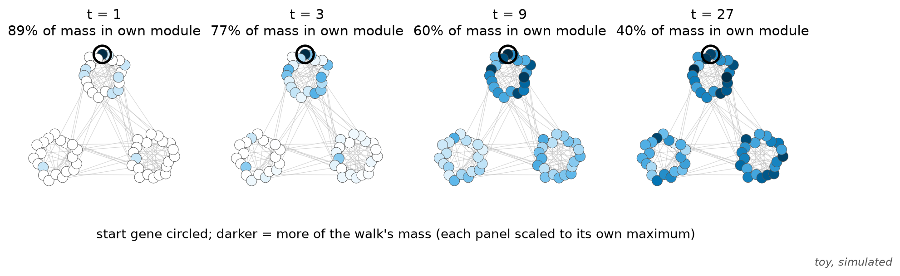
Depth t sets the filter's cutoff: how many modes pass. Breadth keff and the cap shape the graph that is filtered: which genes are linked and how strongly. Changing keff changes the eigenvectors and eigenvalues themselves. Changing t only changes how the same eigenvalues are raised to a power. Because wide graphs have smoother modes, keff and t partly trade off (Section 3 shows this).
The question is how many dimensions the data really has. Take the gene-by-gene correlation matrix and its eigenvalues. Some are large because of real structure. Others are large by chance alone, because a finite sample always shows some correlation.
Horn's parallel analysis (PA) measures what chance looks like. Permute each gene's values across experiments, independently for every gene. This keeps every gene's own distribution and destroys all relationships between genes. Recompute the eigenvalues. Repeat 20 times. The result is a permuted band. The edge of the band is a high percentile of the largest permuted eigenvalue (for example the 95th). Eigenvalues above the edge count as signal. Their number is the data's dimension k. With only 20 permutations the 95th percentile is almost the maximum, so the edge is noisy. Use more permutations if the edge matters.
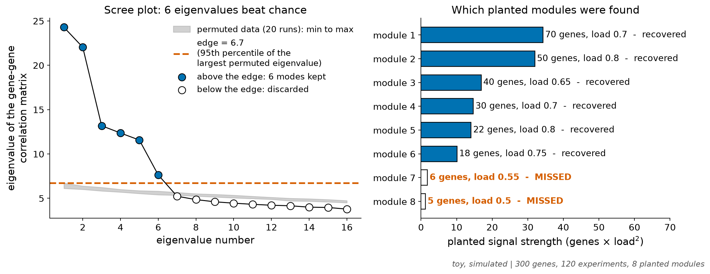
The reviewer's rule applies PA to the walk operator rather than to the correlation matrix. Rebuild the whole operator (CLR, softmax, lazy walk) on each permuted dataset. Take the edge eigenvalue λedge, the median over permutations of the largest eigenvalue after the trivial one (which is always 1). Then choose the depth so that a mode sitting exactly at the edge is faded below a small number ε.
t* = ln(ε) / ln(λedge)
In words: find the number of steps t for which λedget = ε. This converts an edge in eigenvalue units into a depth in steps. Modes below the edge are faded below ε. Modes above the edge keep more.
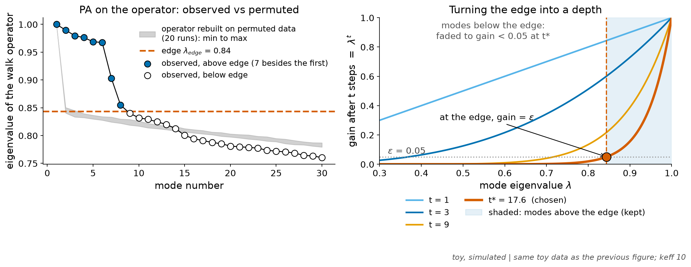
Sensitivity in the toy (prediction for real data: untested). ε = 0.1, 0.05 and 0.01 give t* = 13.6, 17.6 and 27.1, so ε is a convention and moves t* by a factor of two. The edge also moves with breadth: keff 6, 10 and 20 gave λedge 0.89, 0.85 and 0.79, so t* = 26, 18 and 12 (5 permutations each). The reason is that the softmax gives every gene about keff partners even when the data are pure noise, so the permuted operator is a random graph whose fan-out is set by keff. The review's expectation of an edge near 0.72 (which would give t = 9) is a guess. This toy has a higher edge.
Yes, partly. PA gives the dimension k: how many modes exceed chance. Through the edge eigenvalue it also gives a depth t, given a keff and an ε.
No, it does not by itself give keff (breadth per hop). The permuted operator depends on keff, so PA answers "what depth goes with this breadth?" and not "which breadth?". Keff needs a criterion that looks at prediction (the graph-signal likelihood, Section 3) or at stability (the instability curve).
Caveats.
Marchenko-Pastur edge. A formula for the upper edge of the eigenvalues of a sample correlation matrix when all variables are independent with equal variance. It needs no permutations, but it assumes independent, similarly behaved genes. PA by permutation keeps each gene's real distribution (skew, ties, zeros), so it is closer to the data. They agree when the assumptions hold (Figure 2a).
Minka's Laplace evidence for probabilistic PCA. It scores each number of components k by an approximation to the Bayesian evidence of a Gaussian model with equal noise on every variable. It is BIC-like and needs no permutations. It tends to differ from PA when the noise is not equal across genes or when there are many weak components.
Bai and Ng information criteria. Criteria for the number of factors when both the number of variables and of observations are large: the residual variance after k factors plus a penalty that grows with k. They assume a factor model with weakly correlated noise. (Not in the reference list; unverified here.)
I make no claim about which of these agrees with PA on real expression data. That is not known.
The idea. Treat each experiment's expression across genes as a signal on the graph (Section 1). If the graph is right, signals are smooth: most of their energy sits in low-frequency modes. Build the graph from one set of experiments. Then ask how well it describes other experiments.
The energy profile. For each mode k, take the mean squared projection of the held-out experiments onto that mode. Call it ek. Plot ek against the mode's eigenvalue. Low-frequency modes should carry a lot of energy. High-frequency modes should carry only noise.
The model. The review writes the covariance of an experiment as the walk's low-pass filter plus noise. This gives three parameters: the overall size c, the depth t, and the noise floor σ2.
expected ek = c · (λk)t + σ2
In words: the energy of a mode is a low-pass shape that falls with eigenvalue, plus a flat floor of noise that every mode has. The Gaussian likelihood of held-out experiments depends on the data only through the profile ek.
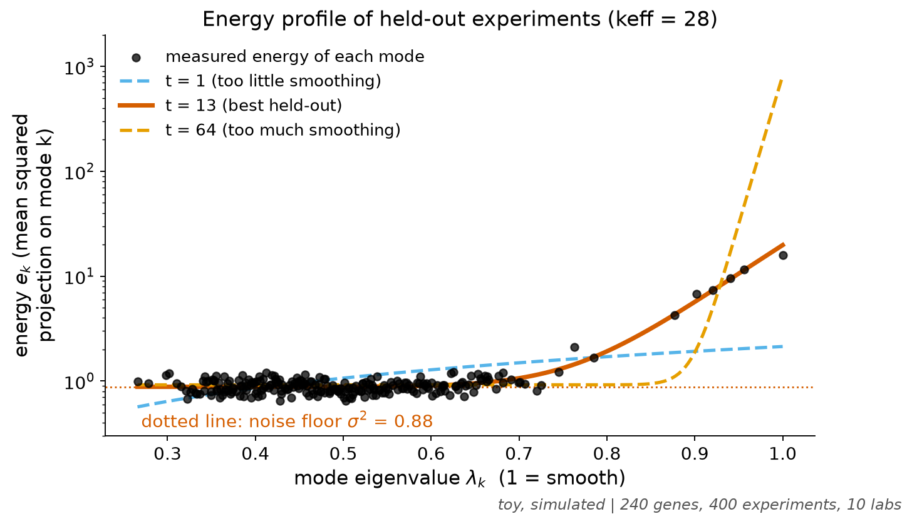
Choosing the scale. For each candidate graph (a value of keff) and each depth t, fit c and σ2 on some held-out laboratories and score the log-likelihood on the remaining ones. Take the depth with the highest held-out score. No extra penalty is used, because scoring on data that were not used to fit already penalises over-fitting. In the toy, the graph is built from the first 5 of 10 laboratories, and the held-out half is 5 laboratories, each scored in turn.
A second reading is BIC with n set to the effective number of independent experiments (not the number of experiments, which overstates it when laboratories correlate) and k set to the number of hyperparameters (3). The review says the two readings should rank depths the same way. If they do not, say so.
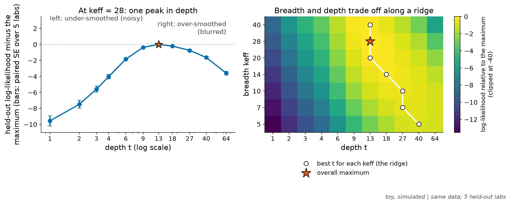
How strongly is it determined? (Toy numbers, not a prediction for real data.) Along the ridge the best score per keff differs from the overall maximum by only 0.1 to 0.8 log-likelihood units per experiment, out of about −115. Those gaps are larger than their paired standard errors (0.04 to 0.12), so they are visible, but they are small. The standard errors are small because the 5 toy laboratories are similar. Real laboratories will differ more. The one-standard-error rule, which picks the smallest depth within one standard error of the best, simply picks the maximum here. The main lesson: keff is weakly identified once depth is free. Reporting the ridge is more honest than reporting one point.
What the review does not say, and I did here. The review fits c, t and σ2 on the same held-out half that it scores. A strict held-out score fits on some held-out blocks and scores on others, as in this toy. The toy also uses correlation as a stand-in for the CLR score. Whether the likelihood tracks complex recovery on real data is untested.
Definitions. From a start gene run a personalised random walk: at each step the walker moves along an edge, or with a small probability jumps back to the start gene (this is personalised PageRank). Genes the walker visits often are close to the start gene. Sort the genes by walk mass per unit of degree, so that hubs do not win just for having many edges. Then grow a set one gene at a time in that order. This is the sweep.
For each set S in the sweep compute its conductance: the share of the set's edge weight that points outside it.
conductance(S) = weight of edges leaving S / total edge weight touching S
In words: a low value means the set is a cohesive island that is hard to leave. The island of the start gene is the set where conductance is lowest (Andersen, Chung and Lang, 2006). Call that lowest value φ, the leak rate per step. A plain walk stays inside the island for about 1/φ steps. A lazy walk, which moves only half the time, stays about 2/φ steps.
Depth window. To use the island to set depth, a walk needs enough steps to mix inside the island, about 1 divided by the island's internal spectral gap (the gap between its top two eigenvalues). It needs few enough steps that it does not leak out, about 2/φ. So the depth window is [1/gap, 2/φ]. A wide window means a clearly separated module.
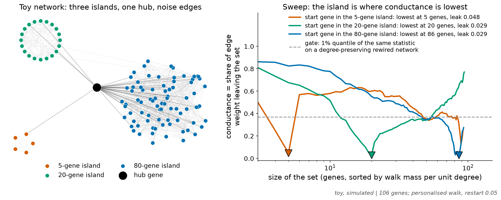
Depth windows in the toy (planted sets; 2/φ is the lazy leak time). 5-gene island: φ = 0.048, window 1.6 to 42 steps. 20-gene island: φ = 0.029, window 3.3 to 68. 80-gene island alone: φ = 0.126 because of the hub's edges, window 4.3 to 16. The hub narrows the window of the module it attaches to.
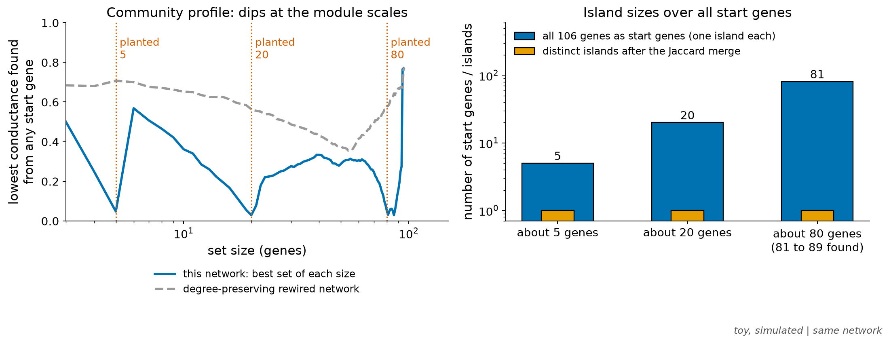
Tight blocks and the Jaccard merge. Many start genes in one module return nearly the same island. Counting every start gene would count that module many times. Merge islands greedily in order of increasing conductance: an island joins an earlier one if their Jaccard overlap (size of the intersection divided by size of the union) is at least 0.5. Report both the seed-weighted sizes (what a typical gene experiences) and the distinct islands (module sizes). Nested sub-complexes have low Jaccard but high containment, and they signal several scales, so they should be kept and recorded.
The PI's scheme draws pairs with equal chance per decade of tail rank (log-uniform), takes their endpoints, and removes duplicates. This puts many draws on the very strongest pairs. It samples the strongly connected part of the network, not genes in general. The review warns about a size bias: a module with n genes has about n(n−1)/2 strong pairs, so its members are more likely to be drawn. The fix is a Horvitz-Thompson weight: weight each start gene by the inverse of its chance of being drawn.
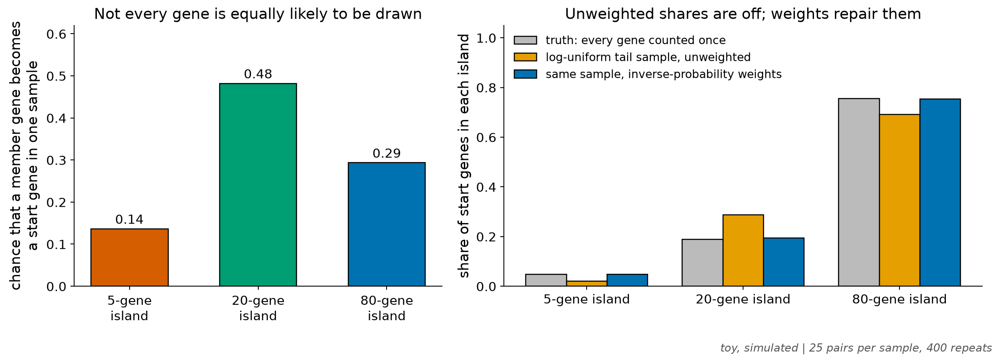
What tcaCLR does. It takes the log of the walk probability, log Ptij, for each gene pair, and applies a second CLR: for each row it subtracts the row mean and divides by the row standard deviation. The mean and standard deviation are taken over reachable entries only, that is, entries where Ptij is above zero. Negatives are set to 0 and the two directions are combined.
The problem. Suppose a module has almost no edges to the rest of the graph. The walk from a gene in it can reach only the module (plus perhaps a few genes). Its row then has no background. The row's mean and standard deviation describe the module itself, so every member looks ordinary relative to the other members. The z-score no longer says "this partner stands out from the genome". The project's earlier simulation called this reachability confinement.
What the proposal changes. The review proposes a diffusion pointwise mutual information (PMI). For a pair (i, j) compare the walk probability with what the walk would give if it forgot where it started: the stationary probability πj of landing on j, which is proportional to the gene's weighted degree.
Wij = log( Ptij / πj )
In words: how many times more often than a degree-matched random landing does the walk from i land on j? Unreachable pairs get a floor instead of being dropped. W is then standardised with one robust scale taken over all pairs, not row by row. The null ("landing independent of the start") is degree-corrected, so hubs get no free credit.
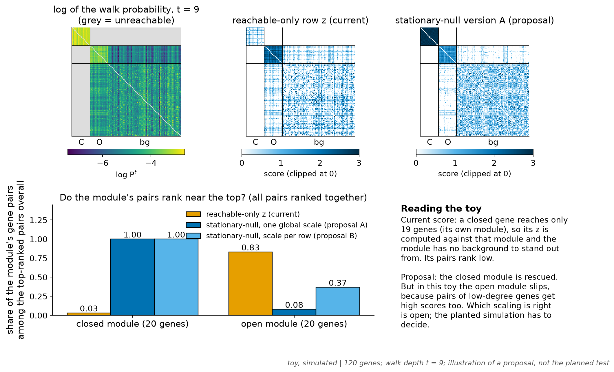
This is a proposal. In the project it is to be tested only inside the planted simulation. The figure is a toy illustration, not that test. It shows the closed-module failure is real in a toy and the proposal can rescue it. It also shows the proposal has its own failure: it favours rare partners, so the choice of scale matters a great deal (8% against 37% for the open module). I did not tune the toy to remove this.
One more point. The stationary distribution is not unique for a graph with a closed module, because the closed module is a separate component. The toy uses the degree-proportional distribution over the whole graph, as in a configuration-model null. The review writes π without addressing this.
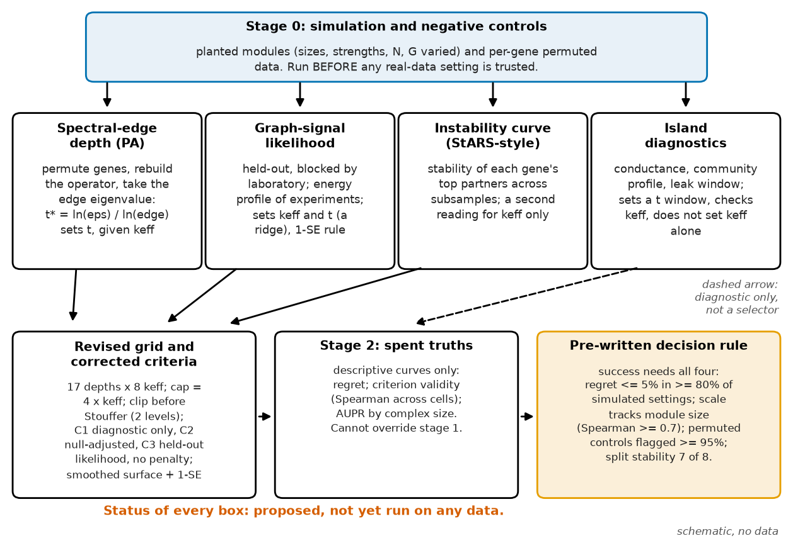
| Parameter | Set by | What could go wrong |
|---|---|---|
| keff (breadth) | graph-signal likelihood (blocked by lab, 1-SE rule); instability curve as a second reading | weakly identified once depth is free (a ridge); batch counted as biology; instability over-selects; one keff cannot suit all module sizes |
| cap | a rule, not a search: the smallest cap leaving under 1% of softmax mass outside it in 95% of rows (about 3 to 5 times keff) | at large keff the cap may be costly; the tail mass must be reported |
| t (depth) | spectral-edge rule; graph-signal likelihood; island leak window | ε is arbitrary; the edge depends on keff; weak modules fall below it; no spectral gap means a flat likelihood; the second CLR can collapse (closed modules) before the spectral rule says stop |
| laziness | fixed at 0.5 (smallest value keeping the symmetrised kernel positive semidefinite; it only rescales time) | that argument holds for the symmetrised, undirected picture; the real operator is directed and can have complex eigenvalues |
| MI bins | fix at 10 unless blocked split-half reproducibility of row ranks disagrees by more than one standard error | weakly identified; the review's formulas are for histogram estimators under independence |
| clip | a diagnostic (left tail of the pooled z histogram against a fitted null), not a search axis; both clips come before the Stouffer combination | if the left tail is heavier than the null, negative z carries information and the clip hurts |
Nothing here has been run on real data. Every truth set in the project is used up, so any claim about a changed setting needs a truth that has not been used. Matching keff 10 and t 9 on E. coli (M3D) and K562 would be necessary but not sufficient, because those values were chosen after many looks. The decision rule in the figure is the review's suggestion and the plan's revision 2 adopted it. If the rule fails, no label-free setting is declared.